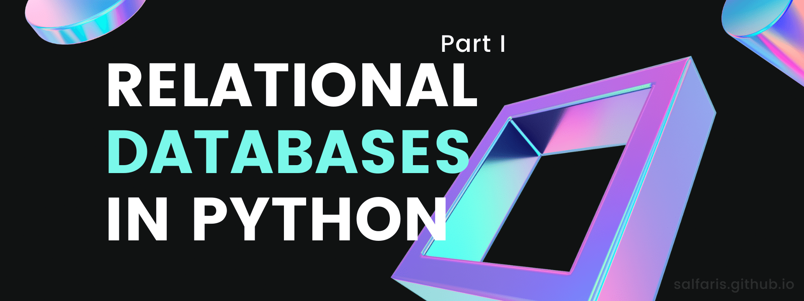

We usually hear the word databases being thrown around especially when talking about data-related things. So what is it, and what is the more precise term relational databases?
A relational database is like an Excel file. It is made up of tables (note that this is plural) which holds data in the form of columns and rows. In the Excel analogy, tables are basically sheets. Moreover, tables can be related to each other but they need a column to act as a bridge linking them. Such a column is usually called a key (either primary key or foreign key). This feature of being related explains the relational term in relational databases. Relational databases is part of the relational model which is a much more general framework of structuring and handling data management.
From now on, we shall simply refer to relational databases as just databases.
Introduction to SQLAlchemy
pip install sqlalchemyGreat, we now know what databases are, but how do we work with them? If this is an Excel file, we just open it and the rest is obvious (at least we think it’s obvious because we’re used to working with it). How do we open and interact with a database? There are many ways to do this and there’s no one right way. For example, you can work directly with SQLite or MySQL in the command line but things can really get messy if you do it this way.
If you’re using Python, then enter SQLAlchemy! SQLAlchemy gives you the power of interacting with databases using SQL queries straight from Python. Plus, it helps us abstract away complex queries and the difference in databases (remember that there are a lot of popular databases e.g. MySQL, PostgreSQL and Oracle with subtle differences among them). So querying databases becomes cleaner (and more exciting?) via SQLAlchemy. To install SQLAlchemy is as easy as executing the line of code you see below this section’s title in your favorite terminal. If you’re using Anaconda, then it is already shipped and ready to use!
Additional notes:
This is not an excuse to not learn writing raw SQL queries because understanding SQL is still important when working with tools like SQLAlchemy!
Those of you who have built web applications with Flask or Django might realize that we usually handle data using an object-oriented approach – using so-called data models. This is the Object Relational Model (ORM) approach, which is one of the two main components of SQLAlchemy. The other main component is called the “core part” of SQLAlchemy which is really centred around the relational model of the database. The latter is the one that we will be focusing on in this post today.
üí¨ Talking to a database, first steps
Step 1: Create an engine
To write something on a paper, you would need a pencil. To turn the lights on, you would need to switch the toggle. To interact with a database, you would need a so-called engine.
In theory, a database relies on this engine just like how a car would rely on its (car) engine. But I found that thinking of this engine as a mediator rather than a literal engine is much easier to digest.
To create an engine, you first have to import the create_engine function from sqlalchemy. Then, you need to pass in a connection string which in its simplest form specifies two things: (i) the database you want to talk to, and (ii) the path to the database. For example, if I want to connect to race_data.db which is a SQLite database in my current directory, the connection string would be "sqlite:///race_data.db". So together, they would look something like this:
engine = create_engine("sqlite:///race_data.db")Key terms
- The engine is a mediator for SQLAlchemy to interact with a database.
- A connection string specifies the details of the database we want to interact with.
Step 2: Establish a connection
In the previous step, we have simply created an engine but have yet to connect to it! To establish a connection, you can simply invoke another one-liner:
connection = engine.connect()One thing worth pointing out is that SQLAlchemy is clever enough to not actually make a connection until we pass in some queries for it to execute.
Step 3: Checking table names
Recall that tables are to databases just like sheets are to Excel files. So you’d want to know what tables (not columns of a table, yet!) are available before making queries. To do this, you can simply execute
print(engine.table_names())to get a list of available tables to work with. For me, this returns
>>> ['race_table']which means that I have only one table named 'race_table'. In practice, you would usually have a few tables.
üìù Querying the database using SQLAlchemy
From now on, we assume that we have instantiated an engine and connection object exactly like what we did previously.
Raw SQL queries, ResultProxy and ResultSet
Recall that we use the SQL language to make CRUD operations – create, read, update and delete. If you are not familiar with this, I highly recommend that you learn a bit of SQL after reading this - my recommendation is Mike Dane’s{:target=“_blank”} free and complete SQL course, from installing MySQL to joining tables. However, for now, it is sufficient to know the “Hello World” of SQL – which is SELECT * FROM this_table where this_table is some table in the database. The query SELECT * FROM this_table does exactly what you expect it to do, it selects every possible row (symbolized by the asterisk *) in the table this_table and returns it to the user. In my case, with my race_data.db database, I would want to execute SELECT * FROM race_table. So how would I do this with SQLAlchemy? This is where connection from Step 2 comes in.
The connection object has a method .execute() which can execute raw SQL queries like SELECT * FROM race_table. This will then return a ResultProxy object which can be utilized in various ways to get the data we want (based on our query). Here are some examples of how we would want our data:
- Sometimes, we know our query will return a unique result (e.g. because we query based on a unique ID), so it is trivial that we want the first and only result;
- Sometimes, we want the whole result;
- Sometimes, we want only the top 10.
Imagine processing 500k rows of data just because we want the top 10, not so efficient right? This is why we would want a two-layer process before getting our actual data, the first layer being the ResultProxy object. Getting the actual data from the ResultProxy object is simply a matter of invoking a method. For example, if we would want to get the whole result, we use the .fetchall() method. If we want the top 10 result, we use the .fetchmany() method with size argument set to 10. Invoking these methods returns a ResultSet object, which basically contains the data we want. Here is an example of a complete implementation:
q = "SELECT * FROM race_table"
result_proxy = connection.execute(q) # ResultProxy
results = result_proxy.fetchmany(size=10) # ResultSetQuerying data in Python is a two-layer process:
- A ResultProxy gives us flexibility to access the data that we queried – do you want 1, 10 or 500k?.
- A ResultSet contains the actual data that we queried, retrieved via a ResultProxy method.
Working with ResultSet
The ResultSet results is a list of tuples whose entries corresponds to columns in the table. Let’s get the first row in results. Since it is a list, we do this by accessing the zeroth element in the list via row = results[0]. We can print the row to get the actual data, a tuple with entries:
>>> (1, 88, 0.95, 1, 5, 436, '2013-11-03 13:19:25')To get the column names that correspond to each entry, we can invoke row.keys() to get:
>>> ['Race #', 'WPM', 'Accuracy', 'Rank', '# Racers', 'Text ID', 'Date/Time (UTC)']If we already know which column of interest we want to look at for a particular row, we can access the attribute of the row just like how we would normally do to access the value of a key in a dictionary. For example, if I’m interested in knowing the Accuracy of this row, I would just execute either row.Accuracy or row["Accuracy"] which returns 1 as expected.
SQLAlchemy queries
I know I promised that SQLAlchemy can help abstract away complex SQL queries and database differences, and using raw SQL queries like we did so far doesn’t seem to agree with this promise. Enter SQLAlchemy’s neat and Pythonic way of querying using table reflection.
A table reflection or just reflection is basically a process which reads the desired database, looks for your desired table and copies it into a Table object (see below) as if you wrote a whole raw SQL query to create this table. Personally, the term reflection is quite misleading for me and I would more prefer the term autocopy – because that is literally what the process does, and my philosophy is that explicit is better than nano-misleadings.
To make a reflection, you would need to import two classes from the sqlalchemy library: MetaData and Table. It is worth understanding a basic idea of what these things do:
- The MetaData class can be thought of a folder or catalog that keeps information about database stuffs such as tables. In this way, we don’t have to keep looking up table information because we have “organized” things nicely.
- The Table class does exactly what you expect it to do. It stores and handles the reflected (i.e. autocopied) version of your desired table so that SQLAlchemy can interact with it.
Now we know the required ingredients, let’s see how to actually do a table reflection. Recall that we have instantiated an engine and connection object from the previous section. We now instantiate a MetaData object via metadata = MetaData(); and then instantiate a Table object passing the arguments:
- Our desired table; in my case,
"race_table"(this is a string, cf. Step 3 of checking table names). - The instantiated
metadata. - Set
autoloadto True, and putautoload_withourengine.
Overall, it should look like this:
from sqlalchemy import MetaData, Table
metadata = MetaData()
# Table reflection
race_table = Table("race_table", metadata, autoload=True, autoload_with=engine)The first thing you might want to do then is to use the repr function on race_table to learn our table’s details such as the column names together with their types such as REAL, INTEGER or TEXT. Mine returns this:
>>> Table('race_table', MetaData(bind=None), Column('Race #', INTEGER(), table=<race_table>), Column('WPM', INTEGER(), table=<race_table>), Column('Accuracy', REAL(), table=<race_table>), Column('Rank', INTEGER(), table=<race_table>), Column('# Racers', INTEGER(), table=<race_table>), Column('Text ID', INTEGER(), table=<race_table>), Column('Date/Time (UTC)', TEXT(), table=<race_table>), schema=None)The true power of the SQLAlchemy way of querying comes now. To replicate our raw SQL query of SELECT * FROM race_table, we can import and use the select function from the sqlalchemy library. The select function can take a (list of) Table object to select all the rows in that table. The equivalent query to SELECT * FROM race_table is then select([race_table]). More completely, we execute the following code:
q = select([race_table])
result_proxy = connection.execute(q) # ResultProxy
results = result_proxy.fetchmany(size=10) # ResultSetObserve that the last two lines are identical as to when we were writing raw SQL queries, the only difference being the first line. Hence, the way we access results is exactly the same as we’ve discussed earlier. For the SELECT query, it might be trivial to use the select function but you can imagine that when the queries gets more complex, this will be really nice and clean. Note that you can get the raw SQL query of q by simply printing it to the console.
References
- [1] Introduction to Databases in Python, DataCamp
- [2] Sam Hartman’s Answer to Understanding MetaData() from SQLAlchemy in Python, Stack Overflow